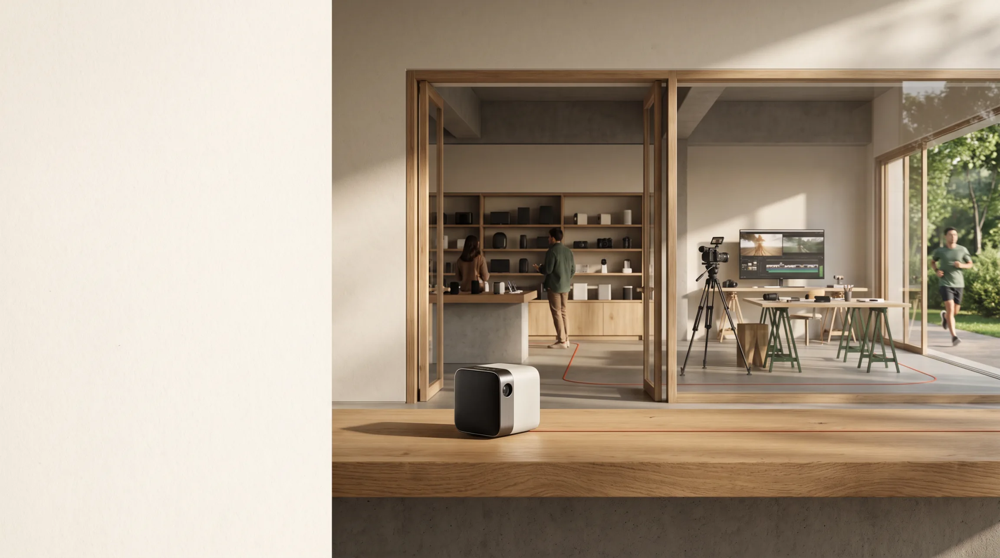
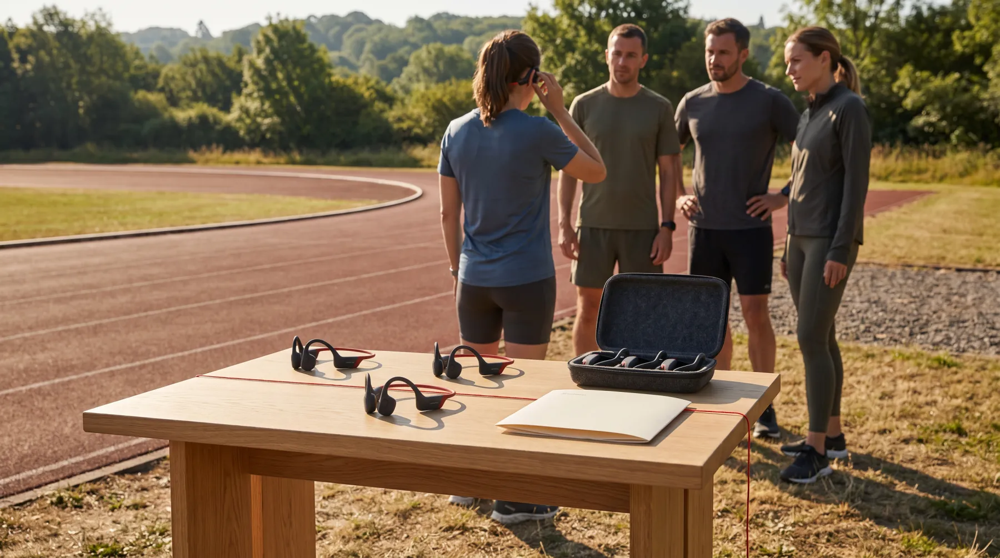

AI 原创场景示意从一款好产品，走向第一条销路。
渠道探索
一款新品，
不止一种出场方式。
从熟悉的人群出发，
走进未曾想到的经营现场。
以下为 AI 生成的经营类型场景；具名经营者仅为公开研究举例。
同样的新品，在不同的地方，会有不同的经营理由。
图片为原创类型场景示意，非具名商家实景。经营者为公开研究入口，合作与准入需逐一确认。
新品商业化
把新品变成机会。
把合适的产品，和愿意经营它的人，
推进到同一项合作里。

联野推进的合作安排 · 示意
一次带着新品的
周末试跑。
让跑者带着真实任务体验，
感兴趣后，由品牌承接购买。
- 产品团队
- 提供样机与产品支持
跟进购买、交付与售后 - 跑团经营者
- 组织成员、带跑体验
共同确认活动支持与合作收益 - 联野
- 匹配合适的跑团，协调条件
把体验与购买承接安排到一起
具体活动、分工和收益，由双方确认。
产品团队
有产品与支持。
希望让合适的人亲手体验，
再承接感兴趣的买家。
渠道经营者
有人群与信任。
希望组织有价值的新活动，
也需要支持与经营理由。
联野要推进的，是把成员价值、品牌支持、双方分工和收益方式谈到一起。
品牌
从递产品介绍，走向一场面对目标人群的体验安排。
伙伴
为成员提供新体验，活动支持与合作收益可以谈清。
以上为原创合作构想，场景由 AI 生成，不是已完成的客户案例。联野的服务范围与费用按项目确认。
从第一条销路开始，
留下品牌能继续经营的合作。
具体分工与联野的服务范围，按项目约定。
从你的新品开始
产品已经准备好了。
一起找它的第一条路。
带上你的产品，也带上你对渠道的疑问。
聊聊你的新品zachsaws@gmail.com